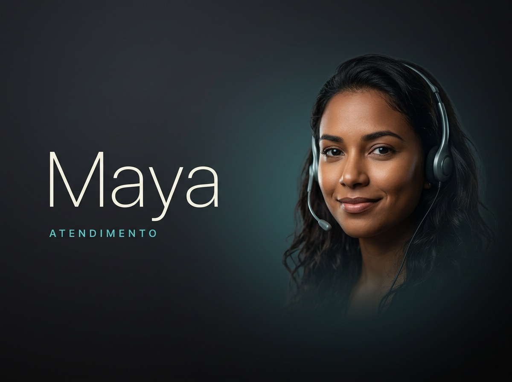
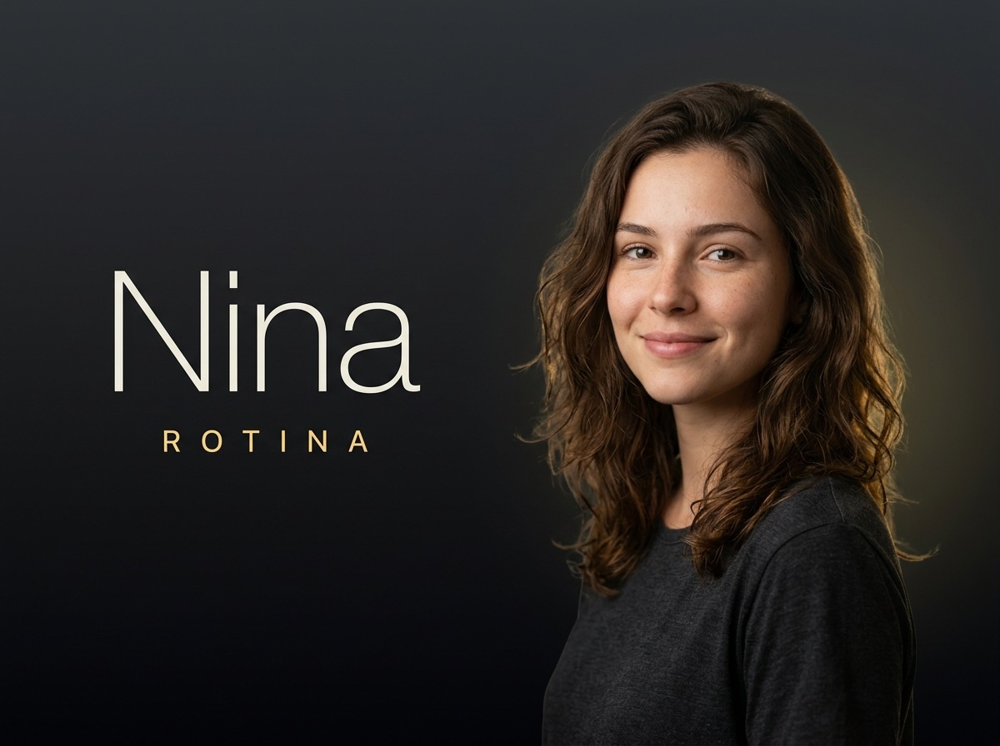

Empresa.ia
Uma equipe de setores agênticos que atende no WhatsApp. Não é um robô — é a Sofia e as especialistas, cada uma com nome, rosto e voz, que conversam, entendem e resolvem. Esta documentação cobre tudo: da experiência ao deploy.
A equipe
Sete pessoas, uma por setor. A Sofia recebe; as outras seis cuidam de cada frente do negócio. Cada uma tem foto, voz de apresentação e um botão "Falar com".
Recebe você, entende o que precisa e conecta com a especialista certa.
Instagram, posts, comentários, DMs e o que vira pauta.
Leads quentes e propostas paradas que viram caixa.

Organiza a fila do WhatsApp e recupera quem ficou sem resposta.
Caixa, atrasos e planilhas, com clareza pra decidir.
Processo travado, tarefa atrasada e fluxo quebrado.

Agenda e a prioridade do dia, pra começar bem.
Como funciona
A entrada é uma conversa, não um menu. O painel só aparece quando a pessoa pede.
@equipe".@equipe abre o carrossel das 7, cada uma com foto e botão Falar com a X.@resumo abre o Relatório por setor — cada especialista comenta o número da área dela.Comandos
O sistema entende comandos explícitos (pull). Texto livre vai pra Sofia conversar.
| Comando | O que faz |
|---|---|
@equipe / @empresa / @funcionarios | Abre a Vitrine — as 7 especialistas com foto e botão "Falar com". |
@resumo / @relatorio | Abre o Relatório do dia por setor. |
talk_<id> botão | "Falar com a X" — a especialista entra com áudio de voz + detalhe. Ex: talk_clara. |
employee_<id> botão | Abre o detalhe de uma especialista. |
call_employee_<id> botão | Pede pra especialista ligar via WhatsApp (Wavoip). Ex: call_employee_clara. |
| texto livre | Vai pro agente — a Sofia conversa e direciona. Nunca empurra menu. |
IDs válidos: sofia, bia, clara, maya, helena, lara, nina.
Os carrosséis
🪟 Vitrine da equipe
As 7 especialistas lado a lado. Cada card: foto (employee-<id>.jpg), nome + setor, e os botões Falar com a X e X liga.
Acionada por @equipe ou quando a Sofia oferece.
📊 Relatório do dia
Um card por setor (exceto a gerência), com o sinal/número do dia e a especialista responsável. Acionado por @resumo.
Formato técnico (enviado ao uazapi)
POST /send/carousel
{ "number": "...", "text": "intro", "carousel": [
{ "text": "*Clara — Vendas*\n...", "image": "https://.../employee-clara.jpg",
"buttons": [ {"id":"talk_clara","text":"Falar com a Clara","type":"REPLY"} ] }
] }479). Em grupo, o painel é redirecionado para o privado de quem chamou.Áudios & voz
Cada especialista tem um áudio de apresentação humanizado (audio-<id>.ogg), disparado quando ela entra na conversa.
Como o agente envia voz
<uazapi>{"type":"ptt","url":"https://.../audio-clara.ogg"}</uazapi>O bridge converte isso em POST /send/media com type:"ptt" (bolinha de voz com waveform). Tipos aceitos: ptt/voice (voz) e audio (anexo comum).
| Campo | Descrição |
|---|---|
type | ptt, voice, audio ou send.audio |
url / file | URL https:// ou data:audio/ (validação de segurança) |
ptt | true força bolinha de voz |
caption / text | texto opcional junto |
.ogg (Opus) é o ideal pra voz no WhatsApp.Arquitetura
O bridge.js é a cola entre o WhatsApp, o cérebro de IA e a voz.
WhatsApp ⇄ uazapi ──(webhook/SSE)──▶ bridge.js ──▶ openclaw + Claude (cérebro: Sofia)
│
├─▶ uazapi /send/{text,carousel,menu,media}
└─▶ Wavoip (ligação de voz real)| Peça | Papel |
|---|---|
| uazapi | Gateway WhatsApp: recebe mensagens (webhook/SSE) e envia texto, carrossel, menu e mídia. |
| bridge.js | Recebe, faz debounce, roteia comandos (Vitrine/Relatório/talk/call), chama o agente e envia as respostas. |
| openclaw + Claude | O cérebro. Encarna a Sofia, conversa e decide. Configurado por SOUL.md (+ soul-empresaia.md). |
| Wavoip | Faz a ligação de voz pelo WhatsApp quando o cliente pede "X me liga". |
| Assets | Fotos employee-*.jpg e áudios audio-*.ogg servidos via ASSET_BASE. |
Configuração
Variáveis de ambiente do bridge.js. Defina via .env / PM2 ecosystem.
| Variável | Para quê |
|---|---|
ASSET_BASE | URL pública base dos assets (ex: https://.../assets/). De onde vêm as fotos e áudios. |
PUBLIC_DIR | Pasta local servida como assets (ex: /opt/empresa-ia/public). |
INSTANCES_FILE | JSON com as instâncias uazapi (token/host). |
OWNER_NUMBERS | Números do dono (acesso a recursos owner). |
OPENCLAW_BIN / OPENCLAW_CONFIG | Binário e config do agente (cérebro). |
AGENT_TIMEOUT_SEC | Timeout por turno do agente. |
DEBOUNCE_MS / PREWARM_MS | Agrupamento de mensagens em rajada e pré-aquecimento. |
ENABLE_SSE | Liga recebimento via SSE (além de webhook). |
WEBHOOK_SECRET | Segredo de validação do webhook. |
WAVOIP_API_KEY · WAVOIP_BASE_URL · WAVOIP_CALL_ENDPOINT · WAVOIP_DEVICE_TOKEN · WAVOIP_DEVICE_URL · WAVOIP_TIMEOUT_MS | Ligação de voz (Wavoip). |
GEMINI_API_KEY / GOOGLE_API_KEY · GEMINI_TRANSCRIBE_MODEL · ENABLE_AUDIO_TRANSCRIPTION | Transcrição de áudio recebido. |
EMPRESAIA_USAGE_FILE | Arquivo de perfil de uso (personalização). |
HEALTH_PORT / BIND_HOST | Porta/host do healthcheck. |
Deploy
employee-*.jpg e audio-*.ogg (pasta generated-carousel/team/deploy/) para o PUBLIC_DIR do servidor (ex: /opt/empresa-ia/public/).bridge.js no servidor e incorpore o soul-empresaia.md ao SOUL.md do agente.pm2 restart empresa-ia-bridge (ver ecosystem.config.cjs).@equipe → Vitrine. "Falar com a Clara" → áudio + detalhe.# exemplo de cópia dos assets
scp generated-carousel/team/deploy/* user@SERVIDOR:/opt/empresa-ia/public/
# verificar sintaxe antes de subir
node --check bridge.jsclaude-cli (cérebro) pode exigir re-login em uma máquina nova — a autenticação não migra automaticamente.Gerar novos assets
Fotos (estilo Apple, 4:3)
Geradas via Gemini 3.1 Flash Image (OpenRouter). Direção: fundo grafite + glow na cor do setor, tipografia fina off-white, brasileira, full-bleed, sem moldura. Salvar como card-<id>.jpg → renomear employee-<id>.jpg.
Áudios (voz humanizada)
Gerados via Gemini TTS (gemini-2.5-flash-preview-tts), uma voz feminina por pessoa, com instrução de estilo "caloroso, natural, WhatsApp". Saída convertida para .ogg (Opus).
FLUXO-EXPERIENCIA.md na raiz do projeto.Troubleshooting
| Sintoma | Causa provável / correção |
|---|---|
| Foto não aparece no card | Asset ausente em PUBLIC_DIR ou ASSET_BASE errado. O sistema cai numa imagem fallback. Suba employee-<id>.jpg. |
| Áudio não envia | URL precisa ser https://. Confirme que o .ogg está em Opus e acessível pela ASSET_BASE. |
| Carrossel falha em grupo (erro 479) | Esperado — Meta não permite interativo em grupo. O bridge redireciona pro privado de quem chamou. |
| "Não achei essa pessoa" | ID inválido. Use só: sofia, bia, clara, maya, helena, lara, nina. |
| Sofia empurra menu sozinha | Revise o SOUL.md: ela deve conversar e oferecer, não emitir carrossel sem pedido (pull). |
| Resposta vazia do agente | O bridge tenta 1 retry e cai num fallback (Vitrine). Verifique OPENCLAW_BIN e auth do claude-cli. |
Empresa.ia · documentação gerada automaticamente. Equipe: Sofia · Bia · Clara · Maya · Helena · Lara · Nina.